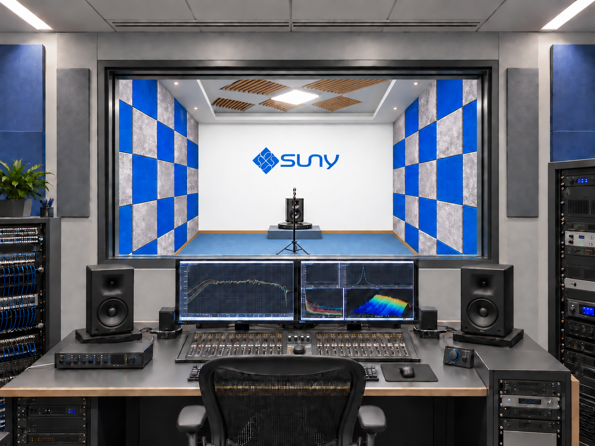

Multi-Model
Proven structures across a wide range of sizes and applications.
ABOUT SUNY
SUNY develops and manufactures loudspeakers for professional customers across automotive, home, architectural and professional audio markets.
OUR DIRECTION
We are building a modern loudspeaker platform for customers who need product variety, controlled small batches, fast customization and data-supported development.
Proven structures across a wide range of sizes and applications.
Flexible production for market validation and specialized programs.
Acoustic, mechanical, material and production engineering.
Design data and test results connected to faster decisions.

ENGINEERING + VALIDATION
Every project moves from target definition to prototype, testing and controlled production.
QUALITY
Frequency response, sensitivity and distortion measured against targets.
Materials and assemblies evaluated for intended operating conditions.
Production controls support repeatable performance across every batch.